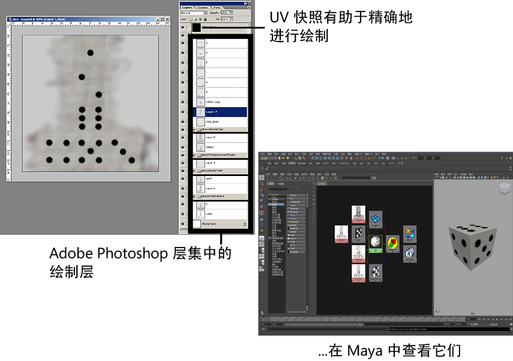

支持 Adobe®Photoshop® 文件（6.0 以上版本），这为简单的绘制工作流提供了方便，体现在下列方面：
- 您可以将任何现有 Adobe Photoshop 文件用作 Maya 中的纹理，这适用于通常应用纹理的任何位置。
- 您可以将包含层集的 PSD 文件转化为 Maya 中“分层纹理”(Layered Texture)以帮助可视化各个层集并使用它们。
- 您可以在 Maya 中创建分层 PSD 文件以在 Adobe Photoshop 中在一个对象上单独绘制多个通道（颜色、凹凸、镜面反射等等）。
- 您可以使用 Maya 的“3D 绘制工具”(3D Paint Tool)草拟（“草绘”）一个对象作为应绘制的 Adobe Photoshop 图像区域的参考线，这在 UV 不合适或不可用作参考线时非常有用。
- 您随时都可以修改 Adobe Photoshop 中的 PSD 文件，然后更新 Maya 中的图像以立即查看所做的修改。